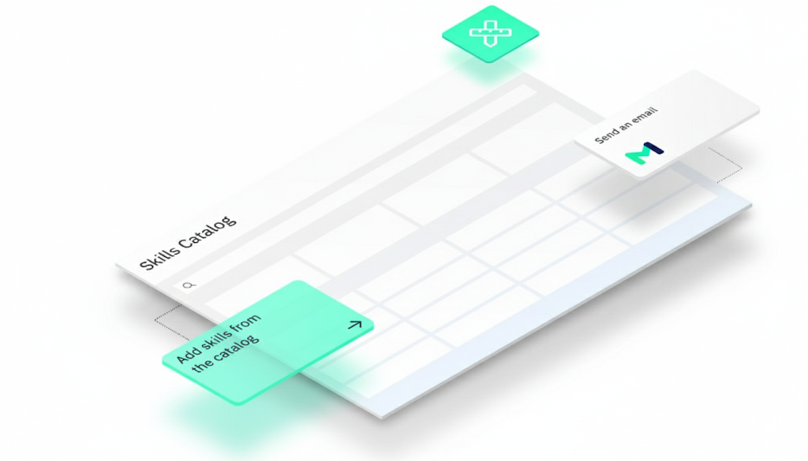

RUDI helps organizations demystify OpenAI tools, train employees, set policy, protect data, and implement Codex-style agent workflows as part of responsible digital transformation.

Digital transformation now requires decisions about provisioned tools, employee readiness, access controls, sensitive data, connectors, and the workflows that should be rebuilt with AI.
Help leaders decide where OpenAI tools, Codex, chat interfaces, coding agents, and internal assistants fit in the operating model.
Train nontechnical and technical teams to understand AI, use it responsibly, verify outputs, and apply it to real job tasks.
Define acceptable use, client-data rules, disclosure expectations, review levels, and escalation paths before usage spreads informally.
RUDI combines workforce development, governance, implementation support, and tooling education so teams can adopt agents without turning every department into an unmanaged experiment.
Map current tool use, confidence, workflow maturity, and governance gaps before selecting or scaling AI systems.
Demystify AI systems and teach teams how to use them for research, writing, analysis, operations, and knowledge work.
Train technical teams, analysts, and operations leads to use Codex-style agents for implementation, documentation, review, and workflow automation.
Help teams understand connectors, MCP servers, local tools, secrets, permissions, and what should or should not be exposed to agents.
Create practical policy for acceptable use, banned uses, controlled uses, disclosure, privacy, and sensitive-data handling.
Move from demos to real workflows with checkpoints, review steps, reusable prompts, and measurable operating improvements.
RUDI's approach is built for workforce development: people learn the concepts, practice with real tasks, understand the boundaries, and leave with workflows they can actually use.
Codex is not just a developer tool in this frame. It becomes a teachable model for how organizations can delegate structured work to agents while keeping humans accountable.
Identify what teams already use, where risk is unmanaged, and which workflows are worth improving first.
Teach concepts, prompting, verification, data boundaries, and role-specific use cases before deeper implementation.
Translate risk into practical guidance: what is banned, what is controlled, what is encouraged, and who approves exceptions.
Use Codex-style agents, MCP tooling, and review loops to create repeatable workflows for development, operations, documentation, and analysis.
Organizations choosing OpenAI tools still need internal confidence, role-specific training, risk controls, and implementation support. That is where RUDI fits.
RUDI translates AI and agentic tooling into practical training programs, readiness assessments, and job-relevant workflows for nontechnical teams.
RUDI helps leaders move beyond scattered experimentation into provisioned tools, governed workflows, and measurable operating capacity.
RUDI supports Codex-style agent implementation, MCP tooling literacy, data-boundary design, and team practices for reviewing agent output.
RUDI reduces adoption friction by helping customers understand, trust, govern, and operationalize the tools they are being asked to adopt.
RUDI provides OpenAI and Codex enablement services. This page does not claim official OpenAI partnership, certification, or specialization status unless and until those credentials are formally awarded.
RUDI training has helped educators move from uncertainty to building workflow assistants that reduce multi-hour administrative tasks.
RUDI helps organizations create acceptable-use guidance, disclosure templates, prompt libraries, and department-specific AI practices.
RUDI's tooling work gives the training practice a technical spine for explaining agents, connectors, secrets, runtimes, and workflow infrastructure.
RUDI can help your team train, govern, and implement the workflows that make AI usable inside real organizations.